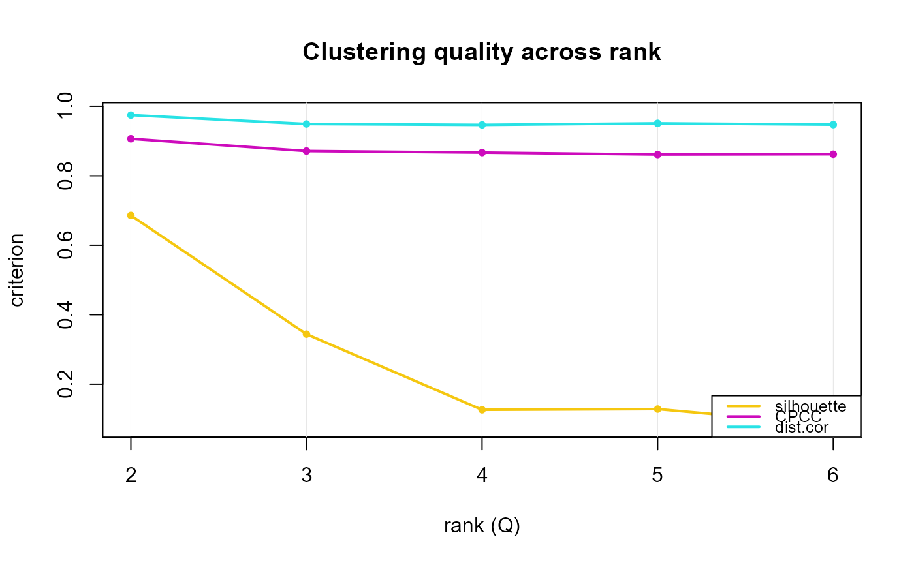

Computes the clustering-quality criteria silhouette,
CPCC, and dist.cor for a list of models fitted at
different ranks (or a single fit), returning one row per rank. These
are clustering-stability diagnostics (how decisively and
faithfully the samples cluster), conceptually separate from the
rank-selection *.rank functions (which use r.squared, effective
rank, and ECV) and complementary to nmf.cluster.flow
(which shows how the hard clustering itself changes across ranks).
Hard sample clustering requires a non-negative coefficient/score
matrix (so the columns form a membership simplex); when a model's
coefficient is signed (e.g.\ nmfkc.signed, nmfae.signed,
nmfre fits whose coefficient has negative entries) the
hard-label silhouette is NA while the distance-based
CPCC and dist.cor are still computed.
Arguments
- fits
A list of fitted models, one per rank, all over the same \(N\) individuals (a single fitted model is also accepted and wrapped automatically). Supported families:
nmfkc,nmfkc.signed,nmfae,nmfae.signed,nmfkc.net,nmfre, andnmf.sem/nmf.ffb.- Y
The original data matrix used to fit the models (\(Y_1\) for
nmf.ffb); required for the data-space distances.- Y2
Exogenous block, required only for
nmf.ffb/nmf.sem.- names
Optional character vector (length
length(fits)) of x-axis tick labels. Defaults to each result's$rank.- plot
Logical; draw the diagnostics plot immediately (default
TRUE); seeplot.nmf.cluster.criteria.- ...
When
plot = TRUE, graphical arguments forwarded toplot.nmf.cluster.criteria.
Value
An object of class "nmf.cluster.criteria" (returned
invisibly): a list with criteria (a data frame with one row
per result and columns rank, silhouette, CPCC,
dist.cor, and hard) and labels (the x-axis
labels). Results are kept in the given order (not sorted).
Examples
# \donttest{
Y <- t(as.matrix(iris[, 1:4]))
fits <- lapply(2:6, function(q) nmfkc(Y, Q = q, print.dims = FALSE))
cc <- nmf.cluster.criteria(fits, Y, plot = FALSE)
cc$criteria
#> rank silhouette CPCC dist.cor hard
#> 1 2 0.68578817 0.9064673 0.9746472 TRUE
#> 2 3 0.34406544 0.8711792 0.9489567 TRUE
#> 3 4 0.12644452 0.8666824 0.9464434 TRUE
#> 4 5 0.12848073 0.8611024 0.9508510 TRUE
#> 5 6 0.08304005 0.8619749 0.9472392 TRUE
plot(cc)

# }